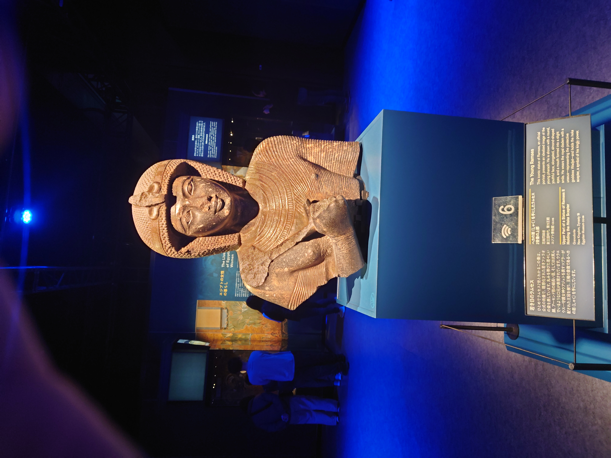
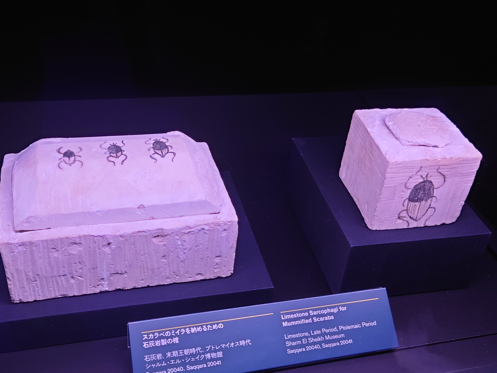

ラムセス大王展に行ってきた話
豊洲でやっているラムセス大王展に行ってきました。
なんで突然
筆者が古代エジプトオタクだとかそんなことは全くなく、ふと展示の広告が目に入ったから行ってきた、というただの気まぐれです。
古代エジプトについては、高校の世界史の先生が面白おかしく教えてくれた1のが印象に残っているのと、創作に活かせないかと神話・信仰の面からほんの少し調べたことがあるくらいで、全く詳しくありません。
そんなわけで、感想も特に深みがあるものではなく、完全な素人目線であることを承知していただけると幸いです。
それから、本記事は古代エジプトについて正しい内容を記述しているとは限りません。正しい知識がほしい人は文献をあたってください。
開催場所
ゆりもめの市場前駅から徒歩3分ほど、CREVIA BASE Tokyoの建物で展示が行われています。
大きな建物はたくさんありますが、道は広いし駅からすぐ近くなので、特に迷うことはないでしょう。
千客万来
市場前と言えば、温泉とフードコートが入っている千客万来があります。
ラムセス展の入場チケットは16時からのものを購入していたので、少し早めに市場前に行ってぶらぶらしてきました。
休日だったこともあって結構混んでました。海鮮丼は美味しかったです。

これは千客万来の足湯から眺めた豊洲大橋。晴れていて良い日でした。
ラムセス2世2とは
FGOプレイヤーにはオジマンディアスという名前で知られていることでしょう。
エジプト新王国時代第19王朝のファラオで、90歳くらいまで長生きし、60年以上も王国を統治した人物です。
100人以上子どもがいたが、長生きしすぎて跡継ぎは第13王子のメルエンプタハだった、しかも即位した時には50代だったとされています。
長生きだったためか、ヒッタイトとの間で起きたカデシュの戦いやその後の和平条約、大小のアブシンベル神殿、愛妻家や子どもたちの墓など、様々な逸話・建造物が残されており、調べるだけでも面白い存在です。
展示物
巨大な像の頭。中王国時代の像を元に作り直したもの。
背景のカルトゥーシュ3にはいったい何と書かれているんでしょう。
アブシンベル大神殿・小神殿の模型。
手前側が小神殿で、妻のネフェルタリに捧げたもの。

若き日のラムセス2世像。
ひとめでラムセス2世とわかる、と書かれていますが、素人には全くわかりません。
ラムセス2世の母トゥヤのものとされる像。
女性が身につけるアクセサリも多く展示されていました。
アクセサリは第12王朝時代のものがほとんどでした。王女・王妃の墓に副葬品として残されていたようです。
猫ちゃん。エジプト人は猫ちゃん大好きと言われていますが、等身大フィギュアを作っていたと表現すると、めちゃくちゃ大好きですね。
こんな形ですが、なんとネコのミイラのための棺らしいです。棺！？4
棺の前にはバステト神5の護符が展示されていました。ネコと和解せよ。
ミイラも展示されています。と言っても、むき出しではなく、外装にくるまれた状態なのであんまりそれっぽさはありませんでした。
ネコの他にも、子ライオンなども展示されていました。

当時のエジプト人はスカラベも神聖視していたようで、スカラベのミイラを納めるための棺もありました。
スカラベが転がす姿を太陽を運行する姿と捉えていた6とか。
こうしてみると古代エジプト人の絵心がすごい。
鳥の頭をした可愛らしい棺。
確か女性の王族のための棺だったと記憶しています。
目玉の展示、ラムセス2世の棺です。
蓋と棺本体の両方が来日するのは初7とのこと。
ライトアップのおかげか、黄金に輝いて見えますが、レバノン杉で作られたもの。
かなりのサイズで、木材をこんな滑らかに加工して、それをこんなに良い状態で保存できるものかと思うくらい8きれいです。
カルトゥーシュの下に、何らかの文章が刻まれているのがわかります。
王家の墓は古くから盗掘の被害に遭いやすい場所らしく、この棺はそうした盗掘から逃れるためにラムセス2世のミイラを逃す道のりを碑文として刻んでいるとのこと。
ムービー
展示物コーナーの始まりや途中に、ラムセス2世をはじめ、古代エジプトに関するムービーが見られる場所があります。
カデシュの戦いに関する説明では、エジプト側に圧勝の記録が残っているもののヒッタイト側から見ればよくて引き分けだったとか、そういう話をしていました。
どうも最近の書籍では、この戦いはラムセス2世が誇張的に記しただけであり、実際はエジプト側の敗北だったと記されている9ようです。
お土産
これは展示物ではなく、展示コーナーを抜けた先のお土産コーナーに売っていたものです。
ヒエログリフっぽく日本語を書いているパッケージと、役者絵風にファラオとスフィンクス、ピラミッドを描いたパッケージのふたつがありました。
他にもTシャツや靴下、ハンカチ、折りたたみ傘なんかも置いてました。
お土産コーナーの出口はちょっとわかりにくいですが、端っこに階段があり、その先のドアが出口になっています。10
ラムセス展に行くには
入場料がそこそこかかります。前売りでチケットを買っておくとスムーズに入れるので、行くなら前売り券を買っておきましょう。
6月上旬頃にはFGOとのコラボグッズの販売も予定されているとか？
オジマンディアス関連のグッズが出ると予想されるので、ファンの人は発表まで様子を見ても良いかも。
最寄り駅はゆりかもめの市場前。暖かくなってきましたが、海沿いのため、まだ防寒着が必要な日もありそうです。
参考文献
- 今回の主役であるラムセス二世についても、90まで長生きしたとか、めちゃくちゃ子沢山だったという話をしてくれた。
- カタカナ表記はラメセス等ブレがあるが、本記事ではラムセスと記す。
- まるで囲まれたヒエログリフ。ファラオの名前を表すものらしい。
- 像は棺の蓋と一体になっている。下の箱部分にミイラが納められていたのだろう。
- 猫の女神。
- 頭がスカラベになった神ケプリというのも崇拝されているが、頭が本当にスカラベなので検索には注意。
- かつて、蓋のみ来日したことがあるとか。
- 流石に、修復作業が行われたことはあるだろうが、それにしても。
- 河合望 古代エジプト全史 雄山閣 p.321, 大城道則 古代エジプト文明 世界史の源流 講談社学術文庫 p.147
- 日によって設営が変わる可能性もあるが。